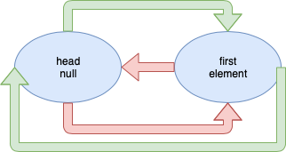
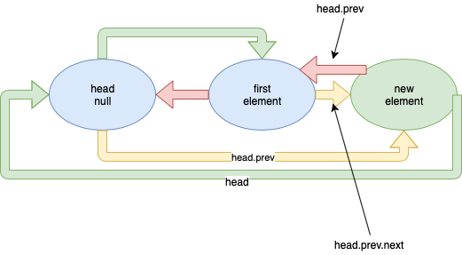
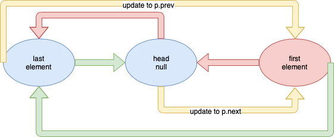
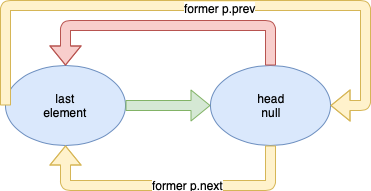

Doubly Linked List Tutorial
I am happy that my introduction to data structures didn’t scare you away! The first structure that I will be covering is the Doubly Linked List which is one of the most used and simplest data structures that implements the list abstract data type. If you want access to the whole Doubly Linked List class and associated test suite you may find it here .
What is a doubly Linked list?
I introduced the List interface when explaining type parameterization in the intro (e.g. the
interface List<T> {
void add(T x);
T remove(int i);
boolean remove(T x);
T get(int i);
boolean contains(T x);
int size();
default boolean isEmpty() {
return size() == 0;
}
}
A doubly linked list is a structure or class that implements all of the methods from the list interface. We call it a doubly linked list because we may traverse the list in both forward and reverse order. We do this using a Node inner class. This Node inner class contains 3 member variables: a piece of data, and pointers to two other Nodes, one being the next node in the list and the other being the previous node.
class Node {
T data;
Node next, prev;
Node(T data) {
this(data, null, null);
}
Node(T data, Node prev, Node next) {
this.data = data;
this.prev = prev;
this.next = next;
}
}
A simple conceptualization of the doubly linked list is to think of it as a chain. When the list is empty we have a head Link or Node. Since the list is empty the head node doesn’t contain any data, and it doesn’t have any other Links/Nodes to point to. As we add Links/Nodes to the list we link them to both the next chain link as well as the head link forming a circular chain.
There are two key features to notice about this implementation of the doubly linked list. 1) This is a circularly linked list, meaning that the end of the list is linked to the front of the list. 2) The head node will never contain any data, it will always be null. We add information to the doubly linked list by adding nodes to the structure. The head node always contains null for data because this is how we recognize the head node. This is often important because we use the head node to perform quick insertions/deletions, and it is a marker to indicate that we have reached the end of the list when we iterate the structure.
What are it’s operations?
As I mentioned before we are implementing all of the methods from the List ADT. Some of these methods are pretty self-explanatory such as the size() and isEmpty() methods. There are some other methods that aren’t trivial, but do not need to be described in great detail. get(int i) and contains(T x) fall into this category.
For the get method if the index provided is within the bounds of the list size (e.g. i >= 0 and i < size()) the method follows the next Node pointers to the Node at the i-th index. If the index i is out of bounds it throws an exception. The remove function that takes an index as a parameter works similar to this get method.
public T get(int i) {
if (i < 0 || i >= size())
throw new IndexOutOfBoundsException();
Node p = head.next;
while (i > 0) {
p = p.next;
i--;
}
return p.data;
}
Similarly, the contains method takes a piece of data and follows the next Node pointers through the list to see if it finds a piece of data in the list that matches the input. If it finds one it returns true, if we reach the head node we know we have made it to the end of the list and we return false.
public boolean contains(T x) {
Node p = head.next;
while (p != head) {
if (p.data.equals(x))
return true;
p = p.next;
}
return false;
}
Note: For those of you who are not familiar with pointers they are simply a reference to another object. They “point” if you will, to another object of that type. In our case the prev and next node pointers point to the node before the current node or the node succeeding the current node.
Let’s move on to methods that modify the list. Because we have to continually update pointers for these operations, we will go into them in more detail. The last thing we want is a Nullpointer exception, or even worse in c/c++ the dreaded Segmentation Fault!
When adding an element to the list we must first create a new Node with the given data. Then we need to point its pointers to the appropriate nodes. This new Node will point it’s next pointer to the head node since it is the new end of the list, and it will point it’s previous pointer to the current last node in the list (e.g. the head.prev node). Finally, we have to update the head's previous pointer(head.prev) and the old last element's next pointer( head.prev.next) to account for the new node. Don’t worry about the modCount variable right now it doesn't effect the form or function of this data structure. I will cover the modCount's functionality in my Iterators tutorial! I know this sounds confusing so don’t be discouraged, I’ve created some diagrams for you to look at below!
public void add(T x) {
modCount++;
n++;
Node p = new Node(x, head.prev, head);
head.prev = head.prev.next = p;
}
This is the original state of the list. A doubly linked list with one element in it.

When we create the new node we point its previous pointer to the old last element in the list (e.g. head.prev which is in this cas "first element"). We point the next pointer to the head since the node we are making is the new end of the list. These pointers are shown in green(next) and red(prev), and the new node is green. the yellow pointers are indicating pointers that we have updated to point to the new node.

When removing a specific element from the list we search for a node who’s data matches the input until one of two conditions are met. Either we have made a mistake and we have null pointers, hence the pointer p == null. Or we have reached the head node again and the p.data == null. If either of these conditions are met before we find a matching item we return false and don’t remove a node because we didn’t find a node to remove. If we find a matching node then we need to update the pointers and decrease the member variable denoting the size of the list. The pointer changes will be described below with the diagram. Once again the modCount variable will be covered in the iterators tutorial.
public boolean remove(T x) {
assert x != null;
Node p = head.next;
// p.data == null as break condition bc we still add a block with null data
while(p != null && p.data != null) {
if(p.data.equals(x)) {
//remove
p.next.prev = p.prev;
p.prev.next = p.next;
n--;
modCount++;
return true;
}
p = p.next;
}
return false;
}
Here is the initial state of the list before removing the node. The node to be removed is shown in red and the pointers that must be updated are shown in yellow.

To update the pointers to remove the node we must point the next node in succession’s previous pointer (p.next.prev) to the previous node (p.prev which in this case is the head), and point the previous node’s next pointer (p.prev.next) to the next node in succession (p.next in this case "last element").

After we've updated the pointers the node we removed is no longer used in our program and is therefore removed from the program by the garbage collector. Note: if you are programming in c/c++ you must not forget to free this memory.
What are the advantages and disadvantages?
Now some of you might be wondering why you would use this structure instead of just using an array. Array's are a useful tool, but depending on the algorithm you are implementing a Linked list could be a better option. The biggest reason linked lists get used for a problem are due to the fact that they practice efficient insertion and deletion. If you have already found the node you need to remove it is a constant time operation to remove it. Another important reason to use a linked list over an array is that you have to resize an array when it fills up, which is an expensive operation because you must create a new larger array and copy the old array into the new one. When using a linked list there is a small constant time cost for adding a new element. Don't let anyone tell you one structure is better than the other this is categorically false. A testament to this is a data structure that uses both arrays and linked list that we'll cover in a later tutorial. It is a HashTable that uses chaining as it's collision resolution strategy.
here is a table giving the runtime complexity of the doubly linked list operations we've covered
| Operation | Array | Doubly Linked List |
|---|---|---|
| Add | O(N) | O(1) |
| Remove | O(N) | O(N) |
| Remove at Node | - | O(1) |
| get | O(1) | O(N) |
| contains | O(N) | O(N) |